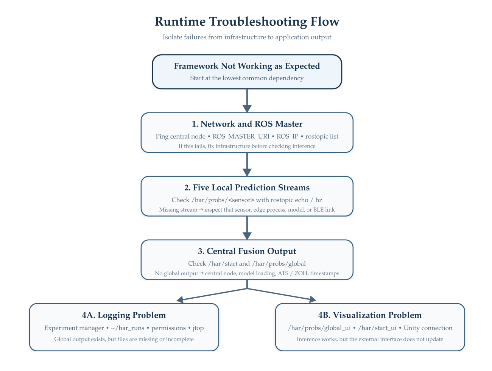
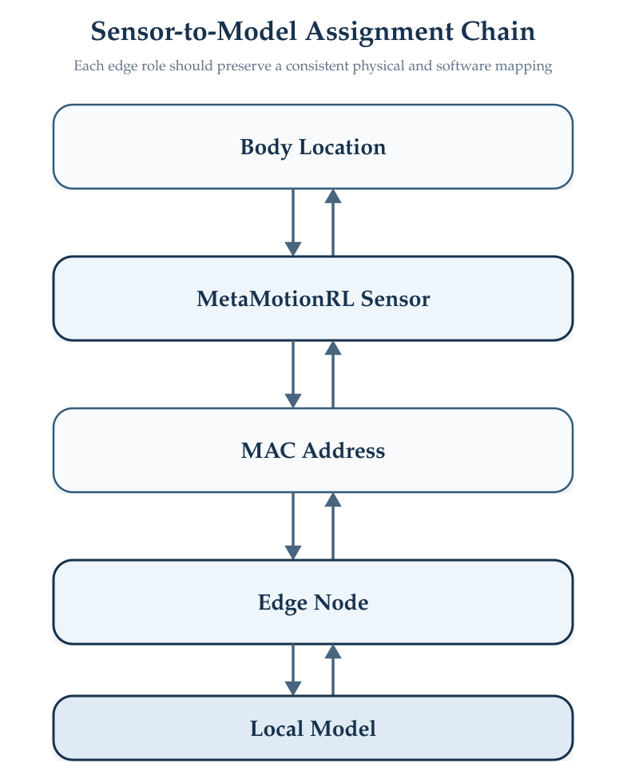
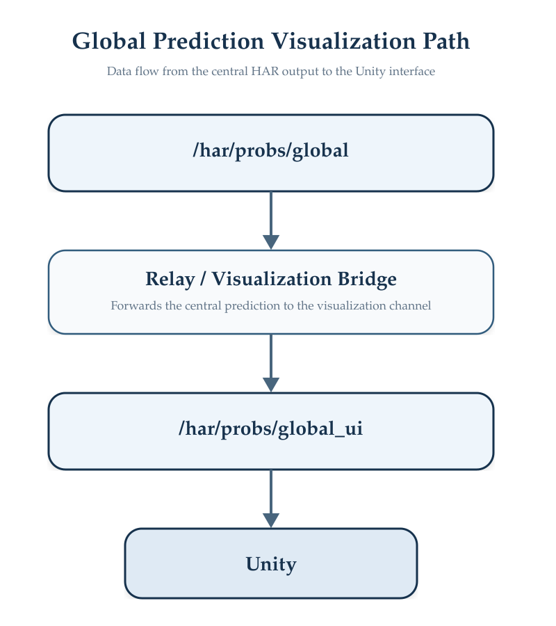

Troubleshooting
Diagnosing Distributed HAR Runtime Problems
Troubleshooting the HAR Distributed Framework is easier when failures are isolated according to the processing layer in which they occur.
Because the system combines networking, ROS communication, BLE acquisition, local inference, synchronization, central fusion, logging, and visualization, checking components in the correct order avoids debugging downstream modules when the actual problem originates earlier in the pipeline.
Recommended Diagnostic Order
The recommended troubleshooting sequence is shown in Figure 1.

The general rule is:
Verify the lowest common dependency first and move downstream only after that component is confirmed to be working.
For example, do not troubleshoot central fusion until the local prediction streams have been verified.
Quick Symptom Guide
| Symptom | First Component to Check | Likely Area |
|---|---|---|
| Edge node cannot reach central device | Network | IP connectivity |
rostopic list fails remotely |
ROS network | ROS_MASTER_URI, ROS_IP |
| Sensor is not detected | Wearable sensor | BLE / sensor assignment |
| Edge process starts but no prediction topic appears | Edge node | Sensor acquisition, model, ROS |
| One local prediction topic is missing | Corresponding edge node | BLE, process, model |
| All local topics exist but no global output | Central node | /har/start, synchronization, model |
| Central switches repeatedly to ZOH | Synchronization | Message timing or missing streams |
| Global output exists but predictions are incorrect | Models | Model file, sensor order, class order |
| Global output exists but no experiment files appear | Experiment manager | /har/start, output path |
power.csv is empty |
Power monitoring | jtop / Jetson power interface |
| HAR works but Unity does not update | Visualization layer | relay/UI topics |
| ATS rarely produces synchronized groups | Time synchronization | Chrony, timestamps, tolerance |
Use the sections below only after identifying the affected subsystem.
Network and ROS
Edge Node Cannot Reach the Central Node
First verify basic IP communication:
ping <CENTRAL_IP>If the central node cannot be reached, troubleshoot the local network before inspecting ROS.
Check the device address:
hostname -Ior:
ip addrDetailed network configuration is documented in Network & Time Synchronization.
ROS Master Is Not Reachable
Verify:
echo $ROS_MASTER_URI
echo $ROS_IPOn an edge device, ROS_MASTER_URI should reference the central node.
Then test:
rostopic listIf this command cannot communicate with the ROS master, verify:
- the central
roscoreprocess; - IP connectivity;
- environment variables;
- firewall configuration; and
- Docker networking if ROS runs inside a container.
Custom Probs Message Is Not Available
Check:
rosmsg show har_msgs/ProbsIf ROS cannot locate the message, source the Catkin workspace containing har_msgs:
source <CATKIN_WS>/devel/setup.bashThen repeat:
rosmsg show har_msgs/ProbsWearable Sensors and BLE
Sensor Is Not Detected
Inspect nearby Bluetooth devices:
bluetoothctlThen:
scan onVerify that the expected MetaMotionRL device appears.
If necessary, restart Bluetooth:
sudo systemctl restart bluetoothThen retry sensor discovery.
Physical sensor assignment and BLE preparation are documented in Wearable Sensor Setup.
Wrong Sensor Connects to an Edge Node
Verify the MAC address configured for that edge process.
Each edge role should maintain a fixed relationship among. The required sensor-to-model assignment consistency is illustrated in Figure 2.

A BLE connection can be technically successful while still being incorrect if the process connects to the wearable assigned to another body location.
Sensor Connects but No Data Are Produced
Check the edge-node terminal for acquisition errors.
Then verify that the expected sensor modality is being configured.
For example, a quaternion branch and an accelerometer–gyroscope branch do not use the same acquisition pipeline.
If the physical connection is valid but model input never becomes available, inspect the acquisition and buffering stages described under Edge Nodes.
Edge Node Problems
Local ROS Node Does Not Appear
Check:
rosnode listThe expected edge roles are:
/chest_node
/left_hand_node
/right_hand_node
/left_knee_node
/right_knee_nodeIf the corresponding node is missing, inspect the Python process running on that Jetson.
Local Topic Is Missing
Check:
rostopic listThe expected prediction topics are:
/har/probs/chest
/har/probs/left_hand
/har/probs/right_hand
/har/probs/left_knee
/har/probs/right_kneeIf only one topic is missing, troubleshoot the corresponding edge node rather than the complete distributed system.
Topic Exists but No Messages Are Published
Inspect the topic:
rostopic echo /har/probs/<sensor>Check its rate:
rostopic hz /har/probs/<sensor>Then verify that the inference pipeline has received the start signal:
rostopic echo /har/startA running Python process does not necessarily mean that inference is currently enabled.
Local Model Does Not Load
Verify that: MODEL_PATH
points to the correct trained parameter file.
Also verify the corresponding scaler file.
The following must match:
Sensor modality
Window dimensions
Channel ordering
Scaler
Model architecture
Trained parametersModel compatibility is documented under Models & Data.
Model Loads but Local Predictions Are Incorrect
Check the sensor-to-model assignment first.
A model can load successfully while receiving data from the wrong body location or in the wrong channel order.
Also verify:
sensor_id
K
probsusing:
rostopic echo /har/probs/<sensor>Central Node Problems
Central Node Does Not Appear
Check:
rosnode listThe central HAR process should appear as:
/central_har_node
If it does not, inspect the terminal running:
central_node_ros_main.py
All Five Local Topics Exist but No Global Prediction Appears
First verify that the framework is enabled:
rostopic echo /har/startThen inspect:
rostopic echo /har/probs/globalIf the five local streams are active but the global stream is absent, inspect the central-node terminal for:
- Model-Loading Messages
- Probability-Vector Size Errors
- Synchronization Messages
- Failover Events
- Timestamp-Related Problems
Central Model File Is Missing
The current central implementation expects:
nn_central_fold1.pth
through its configured MODEL_PATH.
A particularly important behavior of the current implementation is that if this file is not found, the central node can continue after issuing a warning and instantiate the model with random weights.
Therefore, a running /har/probs/global topic does not by itself prove that the correct trained fusion model is being used.
Always inspect the startup output and confirm that the expected model was successfully loaded.
Do not collect experimental data if the central process reports that the trained model file was not found.
The system may continue generating numerically valid probability vectors using untrained parameters.
Probability Vector Sizes Are Inconsistent
The central node expects all local predictions participating in fusion to contain the same value of: K
For the current implementation: K = 6
Check each topic:
rostopic echo /har/probs/<sensor>and confirm that every local message contains six probabilities.
Synchronization Problems
ATS Does Not Produce Synchronized Groups
Verify that all five streams are active:
rostopic hz /har/probs/chest
rostopic hz /har/probs/left_hand
rostopic hz /har/probs/right_hand
rostopic hz /har/probs/left_knee
rostopic hz /har/probs/right_kneeThen verify clock synchronization:
chronyc trackingand:
chronyc sources -vThe current implementation uses:
SYNC_SLOP_SEC = 0.05
QUEUE_SIZE = 10corresponding to a maximum ATS tolerance of approximately:
50 msDetailed behavior is documented in Communication & Synchronization.
Central Node Switches to ZOH
A transition such as:
FAILOVER -> ZOHindicates that ATS has not generated valid synchronized callbacks within the configured failover conditions.
Check whether one or more local streams have:
- Stopped
- Slowed significantly
- Lost network connectivity
- Become temporally misaligned
- Stopped publishing current timestamps
The fallback itself is expected behavior when normal synchronized operation cannot be maintained.
System Remains in ZOH After a Node Recovers
Verify that all five local streams have resumed normal publication.
Then confirm that synchronized ATS events are occurring continuously.
The central implementation requires ATS to remain stable for the configured recovery interval before switching back to normal synchronized operation.
Determine the Current Fusion Mode
Inspect:
rostopic echo /har/probs/globalThe central implementation identifies the source mode in the global message through sensor_id.
Depending on the active mode, the value can identify synchronized or fallback operation.
This is useful when diagnosing whether a global prediction originated from normal ATS fusion or ZOH fallback.
Time Synchronization
ROS Topics Exist but ATS Behavior Is Unstable
A network connection alone is not sufficient for timestamp-based synchronization.
Check Chrony on every distributed device.
On an edge node:
chronyc trackingand:
chronyc sources -vLarge clock offsets can cause predictions representing similar movement intervals to appear temporally incompatible at the central node.
Chrony Does Not See the Central Time Source
Verify:
- Central-Node IP Connectivity
- The
server <CENTRAL_IP> iburstentry on the edge node - The
allow <LOCAL_SUBNET>configuration on the central node - That the Chrony service is running
Check:
sudo systemctl status chronyConfiguration details are documented in Network & Time Synchronization.
Experiment Logging
No Run Directory Is Created
Verify that:
experiment_manager_node.py
is running.
Then verify:
rostopic echo /har/startThe manager creates a new run when it receives the experiment start signal.
The default output location is:
~/har_runs/
Run Directory Exists but inference.csv Is Empty
Verify that the manager receives:
/har/probs/global
using:
rostopic echo /har/probs/globalIf the global stream itself is empty, troubleshoot the central node first.
latency.csv Contains Empty Timing Fields
Inspect the global message:
rostopic echo /har/probs/globalVerify that timing fields such as:
t0_ns
t_last_local_send_ns
t_send_nscontain valid values.
The experiment manager cannot calculate a latency component when its required timestamps are unavailable.
power.csv Is Empty
Verify:
jtopIf the command is unavailable, confirm that jetson-stats is installed.
Power logging is optional and does not prevent prediction or latency logging from operating.
Cannot Calculate Classification Accuracy
The current experiment_manager_node.py records:
pred_labelbut does not independently generate:
true_labelGround truth must therefore be supplied or associated during the experimental workflow before classification metrics can be calculated.
See Experiments & Logs.
Visualization Problems
Global Prediction Exists but Unity Does Not Update
First confirm:
rostopic echo /har/probs/globalIf the global output exists, the inference system itself is functioning.
The visualization data path is illustrated in Figure 3.

Verify:
rostopic echo /har/probs/global_uiIf /har/probs/global exists but /har/probs/global_ui does not, inspect the relay or visualization bridge rather than the central fusion model.
Unexpected Classification Behavior
Probabilities Are Produced but Predictions Are Clearly Incorrect
A technically functioning pipeline can still be semantically incorrect.
Check:
| Item | Required Consistency |
|---|---|
| Sensor assignment | Correct body location |
| Modality | Quaternion or ACC + GYRO as expected |
| Channel order | Same as training |
| Window size | Same as model training |
| Scaler | Corresponding model/scaler pair |
| Local model | Correct node-specific parameters |
| Class order | Identical across all classifiers |
| Sensor order | Same order used to train central fusion |
| Central model | Correct trained parameter file |
This category of failure is especially important because ROS topics may appear completely normal.
Central Input Order Is Wrong
The central fusion model depends on a fixed semantic ordering of local probability vectors.
The implementation uses:
Chest
Left Knee
Right Hand
Left Hand
Right Kneewhen constructing the central fusion input.
Changing this ordering without retraining the fusion model can produce incorrect classifications even though the input still contains the expected 30 numerical values.
Minimal System Test
When the source of a problem is unclear, use the following isolation sequence:
1. Ping central node
2. Verify ROS master
3. Verify har_msgs/Probs
4. Verify one edge node
5. Verify its local topic
6. Repeat for all five edge nodes
7. Verify /har/start
8. Verify /har/probs/global
9. Verify experiment manager
10. Verify visualizationDo not proceed to the next stage until the current stage behaves correctly.
Useful Diagnostic Commands
# Network
hostname -I
ping <CENTRAL_IP>
# ROS configuration
echo $ROS_MASTER_URI
echo $ROS_IP
# ROS graph
rosnode list
rostopic list
# Custom message
rosmsg show har_msgs/Probs
# Experiment control
rostopic echo /har/start
# Local prediction
rostopic echo /har/probs/chest
rostopic hz /har/probs/chest
# Global prediction
rostopic echo /har/probs/global
rostopic hz /har/probs/global
# Visualization output
rostopic echo /har/probs/global_ui
# Time synchronization
chronyc tracking
chronyc sources -v
# Power monitoring
jtop